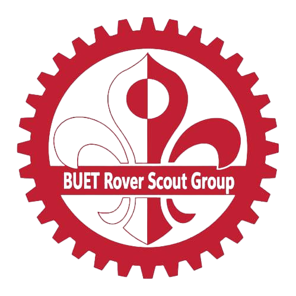

Physics of Stupid
As the Chemistry Instructor of Physics of Stupid I
am engaged in creating educational content for high school students.
I bring high school chemistry
to life with interactive lessons that spark curiosity and
confidence.Through clear, step-by-step YouTube videos, I break down
complex concepts into bite-sized and memorable moments.
I mentor students personally, guiding them on their academic path
with tailored course support.

BUET Brainiacs
As Vice President of BUET Brainiacs, I spearheaded
strategic planning and team development to stage national‐level quiz
competitions—overseeing logistics and sponsor partnerships that attracted
top talent from across the country. I proudly represented our team and secured
victories in inter‐university quizzes. Through focused mentoring
and collaborative practice sessions, I fostered a culture of intellectual
curiosity and continuous improvement, driving sustained success for BUET Brainiacs.

BUET Rover Scout
As an active member of the BUET Rover Scout, I embraced leadership roles in
community outreach—organizing and participating in multiple voluntary activities.
Through mentoring new scouts, I taught essential first-aid, navigation, and survival skills,
fostering a culture of preparedness
and service. My scout experience has instilled in me a deep sense of teamwork, resilience, and
unwavering
commitment to voluntary duty, qualities I carry forward into every endeavor.